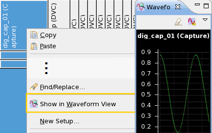

Executing and debugging a digital capture setup
After you have set up the primaries and configured the vector variable you are ready to execute the digital capture test, retrieve the data, and debug them.
Procedure
- To execute the test, use the DIGITAL_CAPTURE_TEST API.
- To retrieve the captured digital data from memory, use the VECTOR API and the getVectors member function.
- To debug the resulting data, you can display the signal of digital capture vector variable in a waveform view.
Examples
Code snippet
ARRAY_I digital_cap;
ON_FIRST_INVOCATION_BEGIN();
DIGITAL_CAPTURE_TEST();
ON_FIRST_INVOCATION_END();
digital_cap = VECTOR("VecVar").getVectors();
...Waveform view
To debug a digital capture setup you can graphically view the captured waveform in a waveform view. To get a meaningful result, you must be connected to a tester and the pattern editor must be in expanded view mode.
To display the waveform:
In the pattern editor, right-click in the cell displaying the vector variable name and select Show in Waveform View.
The waveform view graphically shows the contents of an array selected in the pattern editor view on debugging.